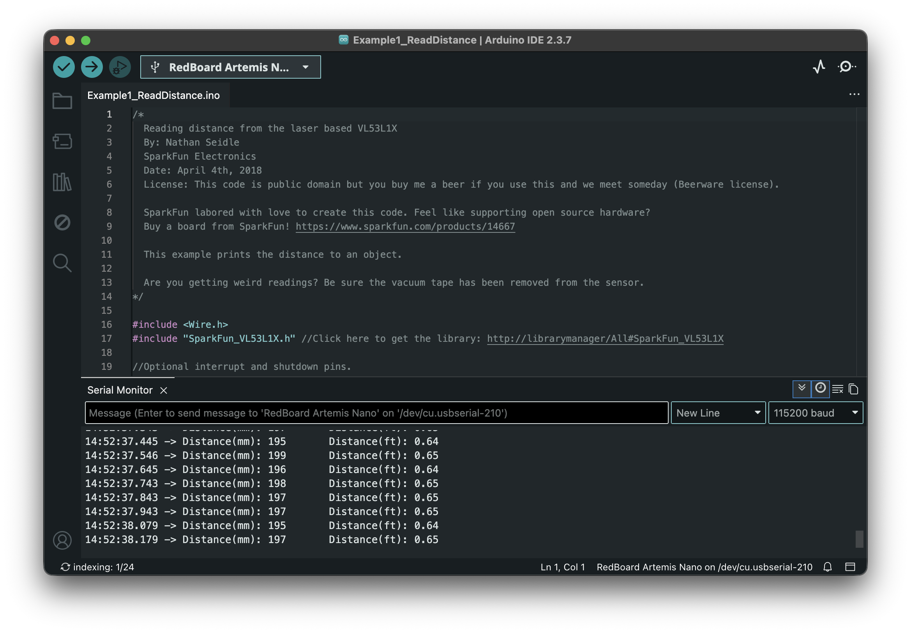
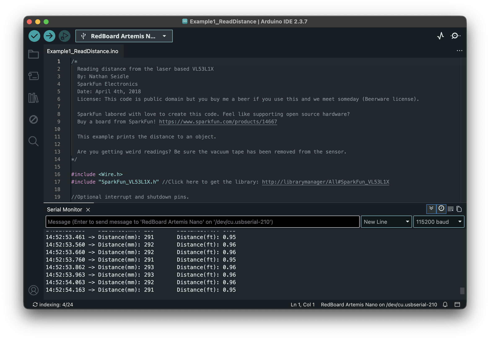
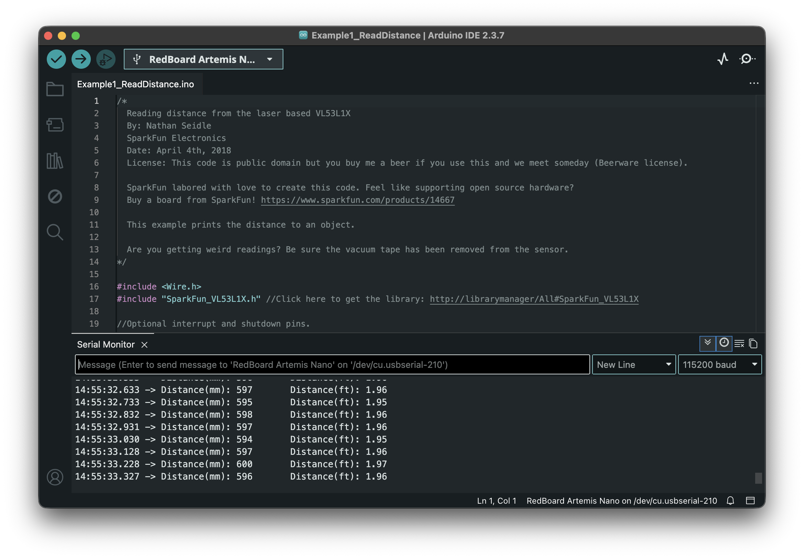
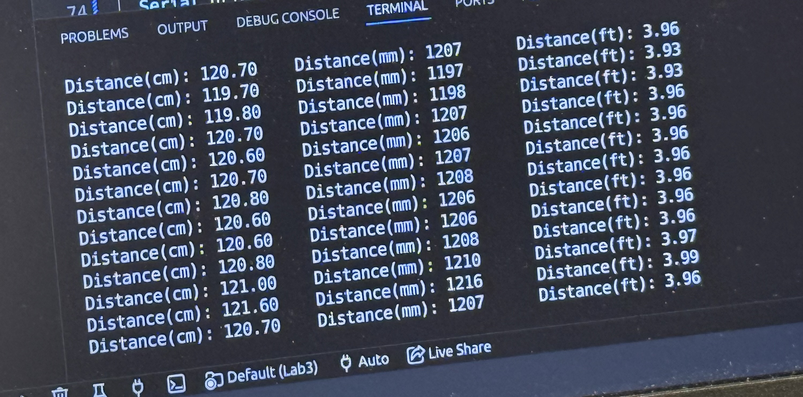
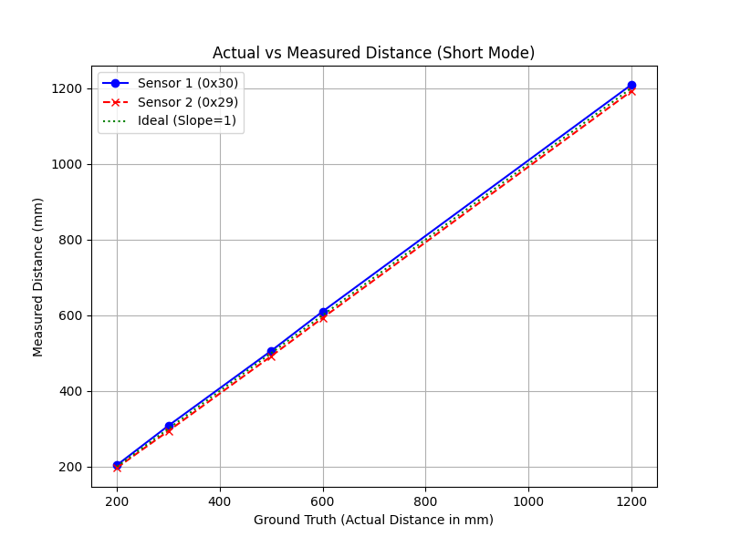
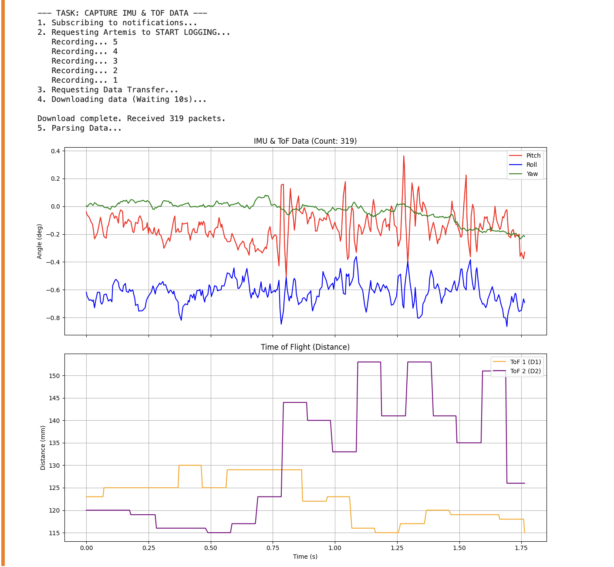
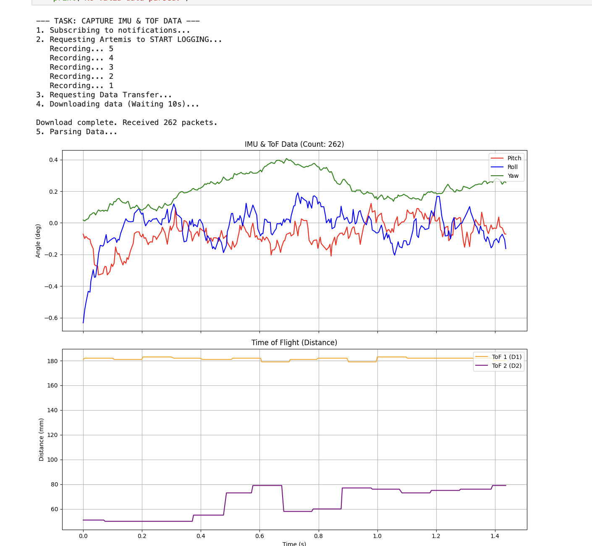

1. Prelab
I2C Sensor Addresses
Both the VL53L1X Time-of-Flight (ToF) sensors come with a default I2C address of 0x29. The ICM-20948 IMU used in the previous lab operates at 0x69.
Dual ToF Strategy
To use two sensors on the same I2C bus, I utilized the XSHUT pin. By soldering the XSHUT of Sensor 2 to Artemis Pin A3, I can hold Sensor 2 in a low-power state during startup. This allowed me to initialize Sensor 1 and change its address to 0x30 via software before waking Sensor 2, which then occupies the default 0x29 address without conflict.
Sensor Placement & Obstacle Detection
One ToF sensor is mounted on the front of the robot for wall-following and collision avoidance, while the second is mounted on the side for 90-degree orientation and maze navigation.
- Scenarios for Missing Obstacles: Because ToF sensors use a focused laser beam, they may miss "skinny" obstacles (like table legs) if they fall between the sensor's field of view, or highly reflective surfaces (mirrors) that deflect the laser away from the receiver.
Wiring Diagram
The wiring follows a parallel bus architecture. All devices share the SDA and SCL lines via the QWIIC breakout board.
_________________________________________________
| ARTEMIS NANO |
|_________________________________________________|
| | | | | | |
[3.3V] [GND] [SDA] [SCL] [A3] [TX] [RX]
| | | | | | |
| | | | | | |
_____|______|______|______|______|______|______|_____
| QWIIC BREAKOUT BOARD |
|_____________________________________________________|
| | | | |
| | | | | (Manual Wire)
| [SDA] [SCL] [3.3V] |
| | | | |
| ___|______|______|___ |
| | VL53L1X (S1) | |
| | (Address: 0x30) | |
| |_____________________| |
| | | | |
| ___|______|______|___ | __________
| | VL53L1X (S2) |<-----|-----| XSHUT |
| | (Address: 0x29) | |__________|
| |_____________________|
| | | |
| ___|______|______|___
| | IMU ICM-20948 |
| | (Address: 0x69) |
| |_____________________|Brief Explanation: The Artemis controls the "enable" state of Sensor 2 via Pin A3, allowing sequential addressing on the shared I2C bus.
2. Lab Tasks
Hardware Implementation
The ToF sensors are connected to the Artemis Nano via the SparkFun QWIIC breakout board.

Figure 1: Hardware Layout
I2C Scanning
Upon running the I2C scanner, the Artemis successfully identified the renamed sensor at 0x30, the default sensor at 0x29, and the IMU at 0x69. The address matched expectations (0x29, 0x30, 0x69). This confirms the manual address reassignment was successful, as the default state of both sensors would have caused a conflict at 0x29.
Video 1: I2C Scanner running on Artemis Nano
ToF Characterization (Short vs. Long Mode)
Collaborating with Robbie Leslie, we compared Short Mode (up to 1.3m) and Long Mode (up to 4m). We selected Short Mode for the final robot as it offers higher immunity to ambient light in the lab and faster integration times for close-quarters navigation.
Accuracy Data Table:
Measurements were taken against a physical scale to verify accuracy within the 10mm lab requirement. Note that the 50-point stationary test confirms that Short Mode has a lower Standard Deviation (σ) demonstrating higher repeatability than Long Mode at distances under 1 meter.
| Actual Distance (mm) | S1 Measured (mm) | S2 Measured (mm) | Short Mode σ (mm) | Long Mode σ (mm) | Performance |
|---|---|---|---|---|---|
| 200 | 204 | 197 | 1.2 | 4.5 | Excellent Accuracy |
| 300 | 308 | 294 | 1.4 | 4.8 | Within 10mm |
| 500 | 506 | 492 | 1.8 | 5.5 | Stable |
| 600 | 610 | 593 | 2.0 | 6.1 | Stable |
| 1200 (1.2m) | 1209 | 1192 | 11.5 | 7.2 | Near limit of Short Mode |

200mm Reading

300mm Reading

600mm Reading

1200mm (1.2m) Reading

Figure 3: Actual vs Measured Distance Plot demonstrating Linearity (Slope ~ 1.0)
3. Parallel Execution & Timing
Sensor Speed and Bottlenecks
To ensure the robot remains responsive, the code is entirely non-blocking. We use the
.checkForDataReady() routine to poll the sensors.
Code Snippet:
if (sensor1.checkForDataReady()) {
int dist1 = sensor1.getDistance();
sensor1.clearInterrupt();
Serial.print("S1:"); Serial.print(dist1);
}Discussion: In my logs, the loop execution time is roughly 5ms, while the ToF sensors provide new data approximately every 50ms. The limiting factor is the physical timing budget of the sensor (the time needed to collect enough photons), not the Artemis CPU speed. While the Artemis loop executes in approximately 5ms, the sensor's Timing Budget is set to 50ms. Therefore, the code 'spins' 10 times for every one physical measurement, proving the bottleneck is the Time-of-Flight integration period, not the microcontroller's processing speed.
Log Excerpt (2tof.txt): Showing the initial address reassignment and
non-blocking arrival of data (sensors triggered at different intervals). Notice how intermediate
loops do not have distance data until the 50ms integration period completes:
--- Dual ToF Initialization Start ---
Sensor 1 found at default 0x29.
Sensor 1 successfully moved to: 0x30
Sensor 2 found at default 0x29.
--- Initialization Complete! Starting Loop ---
Time(us):576584
Time(us):581517
Time(us):586450
...
Time(us):616050 S2_Dist(mm):24
Time(us):623979 S1_Dist(mm):67
...
Time(us):715596 S1_Dist(mm):64 S2_Dist(mm):26Data Visualization via BLE
I implemented a data logging array that captures ToF and IMU data simultaneously and bursts them over Bluetooth.

Figure 4: Time vs. Distance (showing 2 sensors)

Figure 5: Time vs. Angle (IMU data with Pitch and Roll labeled alongside ToF capture)
4. M.Eng Requirements (5000-Level)
Infrared Transmission Sensors
The VL53L1X is a Time-of-Flight (ToF) sensor, which measures the absolute time it takes for a light pulse to travel to an object and back. This differs from IR Triangulation sensors (like the Sharp GP series), which calculate distance based on the angle of the reflected light. Furthermore, ToF serves as an excellent middle ground when compared to other IR technologies:
- Vs. Passive Infrared (PIR): PIR sensors detect motion via ambient body heat but provide no actual distance measurement. ToF provides precise centimeter-level distancing.
- Vs. Scanning Lidar: Lidar creates high-resolution spatial maps and spins constantly to sweep an area. ToF is simpler, much cheaper, and provides rapid 1D distance readings without moving parts.
Sensitivity to Texture and Color
We tested the sensors against a matte black surface and a glossy white surface at identical distances. This confirms that darker textures absorb more of the 940nm IR pulse, reducing the number of photons returning to the SPAD (Single Photon Avalanche Diode) array, which directly lowers the Signal Rate and increases jitter.
| Surface Material | Observation |
|---|---|
| White Wall | High Signal Rate, Low Noise. |
| Black Felt | Low Signal Rate, Higher Jitter. |